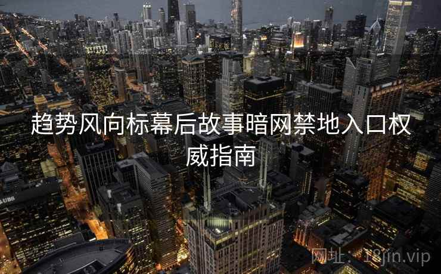

趋势风向标幕后故事暗网禁地入口权威指南
在互联网的明面上，我们每天都会接触到大量的资讯和数据，从社交媒体到新闻网站，信息的流动无处不在。但是，你是否意识到，这些看似无懈可击的信息流背后，隐藏着一个巨大的、无法轻易触及的数字领域？这个领域不为普通人所知，它被称为“暗网”。今天，随着科技的不断发展和网络安全的提升，暗网不再是一个神秘的禁地，而是一个充满无限机会的数字空间。

什么是暗网？
在传统互联网的世界中，我们习惯于通过搜索引擎来获取信息，这些信息仅仅是互联网的一部分。暗网（DarkWeb）是指隐藏在传统网络之外的部分，它通过加密技术和特殊协议（如Tor）来访问，只有少数人知道如何进入。这些地方的存在，仿佛是互联网的另一面镜像，充满了各种无法通过常规手段发现的信息与资源。
进入暗网的门槛很高，需要特定的软件和访问权限，这让普通用户无法随意进入这个世界。但是对于有经验的人来说，暗网却充满了诱人的机会。这里存在着各种未经审查的市场、信息交换和前沿的数字技术。许多前沿趋势的萌芽和技术突破，常常出现在这个隐秘的空间。
暗网禁地：趋势风向标的幕后
如果你是一名数字趋势分析师或科技爱好者，你可能知道，趋势的风向标并不仅仅依赖于表面上的数据。在暗网的深处，隐藏着很多没有曝光的技术、思想和创新。这些信息往往会比公开的资讯更加前瞻和深刻。换句话说，暗网可以被视为未来趋势的“试验田”。
无论是加密货币的诞生，还是区块链技术的突破，暗网常常是这些技术最早的发源地。这里是各种思想碰撞的温床，许多科技人员和创新者会在这里进行技术实验和信息交换。因此，对于趋势的捕捉者来说，暗网的存在不容忽视。
而这些隐藏在暗网中的资源并非没有代价。为了获取第一手的技术情报，进入这些隐秘领域的入口无疑是巨大的挑战。有时，进入暗网的禁地，就像是走进一座没有光的迷宫，需要依靠精确的技术能力和敏锐的洞察力。
趋势风向标：如何找到进入暗网的入口？
如何才能进入这个神秘的数字领域呢？要进入暗网，你首先需要知道一些基础的知识和工具。
使用Tor浏览器：进入暗网的最常见方法是通过Tor浏览器，它能够隐藏用户的身份和位置，帮助你绕过普通的网络审查。通过Tor浏览器，你可以访问以“.onion”结尾的网站，这些就是暗网的门户。
加密与隐私保护：在进入暗网之前，你需要确保你的设备和通信通道足够安全。使用VPN（虚拟专用网络）来隐藏你的真实位置和身份是进入暗网的基本步骤。
小心防范：虽然暗网充满了机会，但同时也充满了危险。许多非法活动和不安全的内容充斥其中，因此了解如何保护自己，避免进入违法或危险的区域至关重要。
暗网背后的趋势：颠覆未来的力量
暗网不仅仅是科技爱好者的乐园，它还是颠覆行业规则和发展方向的核心区域。暗网背后的趋势通常代表了某种反主流的思想或创新技术，它往往会在未来某一天改变我们的生活方式或工作模式。
例如，近年来，许多关于人工智能和大数据的讨论开始从暗网流出。深度学习的算法、量子计算的研究成果、甚至新型的加密协议等，都在暗网的某些地方悄然出现。这些趋势从来没有经过公众的审视和广泛的讨论，但它们却潜藏着改变整个科技生态的力量。
通过了解暗网中的前沿信息，我们能够预见未来的技术变革，并及时把握行业趋势。这也就是为什么越来越多的行业领袖、创业者和趋势分析师开始把暗网视为信息源的原因。
暗网的禁地入口：踏入未知领域
进入暗网不仅仅是技术挑战，更是对个人信息安全和法律风险的考验。一旦踏入这个禁地，你将面对大量未知的内容与资源，而其中的某些领域并不适合每个人。实际上，暗网的入口就像一扇双面门，既能带你进入充满机会的数字领域，也可能将你引向一条无法回头的道路。
许多进入暗网的人，往往是为了寻找某些特别的资源或者技术情报。例如，黑市上交易的加密货币信息、前沿的网络攻击手段，甚至是隐秘的安全漏洞，常常出现在这些未被披露的区域。而这些信息，通常是非公开、具有极高价值的。
这种信息并非对所有人都开放，暗网的特殊性决定了它只适合那些有技术背景且懂得如何保护自己的人。普通用户若贸然进入，很容易遭遇安全威胁，甚至违法风险。
如何有效利用暗网中的资源？
对于有识之士来说，暗网并非仅仅是黑暗的代名词，它同样是一个充满潜力的资源库。在这里，你不仅能找到有关新兴技术的最前沿信息，还能与全球各地的技术先锋和创业者交流思想。利用这些资源，帮助你捕捉到未来的科技趋势，往往是超越竞争对手的关键。
如何才能在暗网中有效获取有价值的信息呢？保持对信息来源的高度警觉和审慎判断是至关重要的。虽然暗网充满了创新和突破，但其中也充斥着大量无用信息和虚假内容。因此，精准的筛选和判断是你成功的关键。
建立一个良好的网络和资源交换渠道也是至关重要的。通过参与暗网中各类论坛、技术讨论和社区，你不仅可以了解到最前沿的技术动向，还可以从中获得来自全球的技术人才和资源支持。
暗网：新世界的钥匙？
从技术创新的角度来看，暗网不仅仅是一个存在于阴影中的世界，它本身就是未来趋势的前兆。它是许多科技创新的诞生地，也是全球各大技术公司和创业者研究新技术和寻找新机会的地方。
对于普通用户而言，探索暗网并非轻松之事，但对于那些追求信息优势、敢于面对风险的人来说，暗网无疑是一个充满无限可能的数字世界。未来，随着科技的不断进步和信息的不断交汇，暗网也许会成为更多行业创新的源泉，成为未来数字世界的重要一部分。
掌握趋势的风向标，了解暗网禁地的入口和背后信息流，将使你站在科技革命的前沿，走在别人之前一步。这，正是新时代赋予我们的机遇，也是我们能够在未来数字化浪潮中占得一席之地的关键。